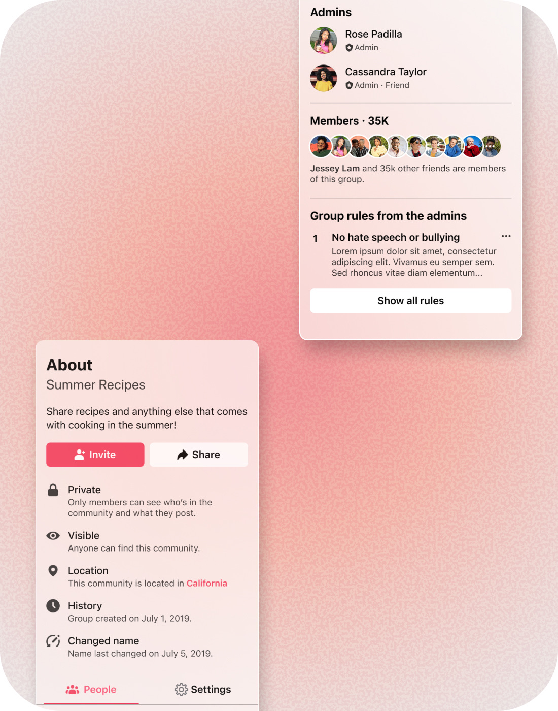
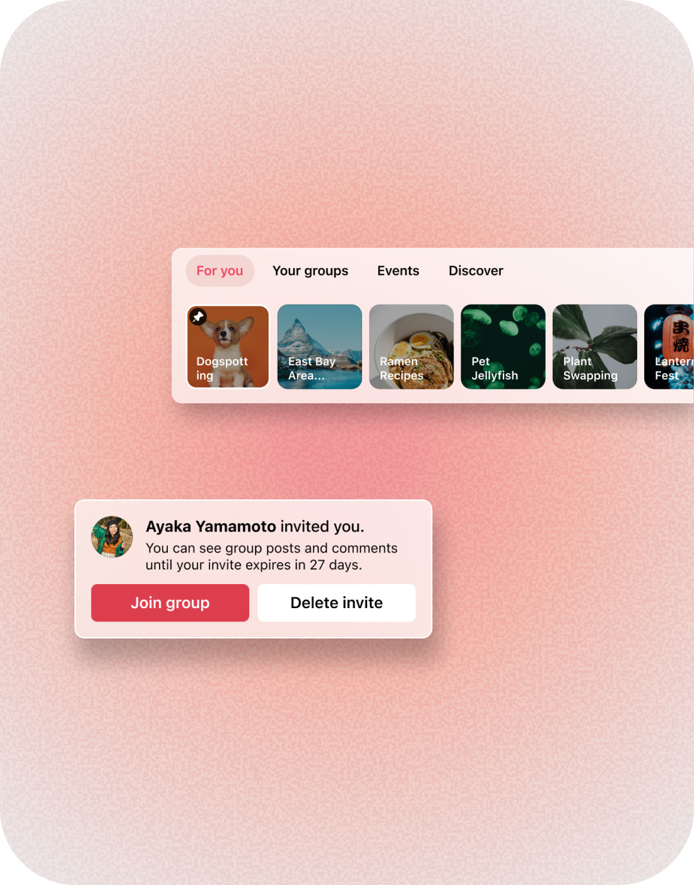
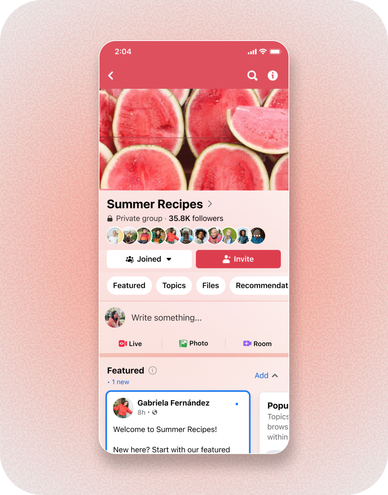

Helping People Navigate Communities
A sense of place across many communities.
Most people on Facebook belong to at least 15 active groups, and more than 100 million join one every day. People needed clearer ways to navigate between communities and understand where they were without losing context.



What I Shaped
- Redesigned core navigation and transitions. Refined Community Home and key entry points so people could move between Groups experiences with clearer orientation and context.
- Defined shared interaction patterns. Designed reusable panels, invitation experiences, and states that worked consistently across iOS and Android.
- Strengthened design quality. Used cross-surface audits, prototypes, and close engineering partnership to identify inconsistencies and bring core Groups experiences closer to the Facebook Design System.
Impact
- Moved topline engagement on a mature consumer surface—roughly a quarter-percent lift, where gains are hard to come by.
- Raised design-system adoption across Facebook Groups past 80%, cutting inconsistency and recurring design debt across iOS and Android.
- Held the quality bar across core surfaces: 17 implementation reviews with engineering, 200+ UI issues resolved.